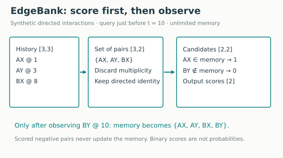
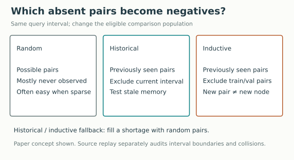
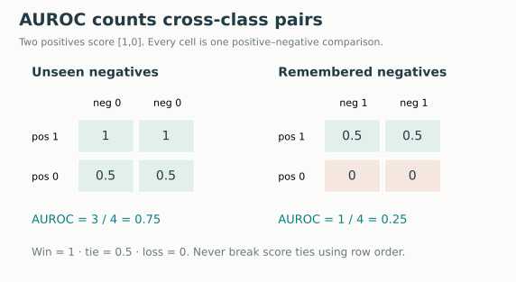
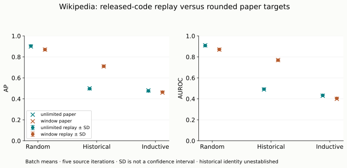

Year 3 · Quarter 3 · Lesson 106
Temporal link prediction: test the candidates
One tangible win: explain exactly what a future-edge score measures—and expose when an easy candidate set makes memorization look intelligent. Core lesson: 20–30 minutes. Lab: 40–60 minutes, plus the complete source replay.
1 · Retrieve before reading¶
Without opening your notes, answer:
- Can a prediction just before time 10 read another event timestamped 10?
- If a record happened at 3 but arrived at 12, can a query at 8 use it?
- Does a daily count-weighted graph retain the order of its interactions?
Check after writing your answers
No, no, and no under our strict before-event contract. Require event time < query and availability ≤ query. Counts preserve multiplicity, not order. Revisit L104 and L105 if needed.
The next problem. L105 established what a representation retains. Now we must decide what prediction we are evaluating. A model can use legal history and still receive an unconvincing test: distinguish a familiar pair from a randomly constructed pair that almost never interacts. For our relational-learning mission, beating that test alone is weak evidence that a learned relational model adds value.
2 · Define the prediction before the model¶
An interaction is an occurrence. An editor can edit the same page repeatedly. Predicting its next edit differs from predicting its first-ever connection to that page. A previously observed pair may be positive again.
A query specifies a source, destination and time. A scorer assigns a number s(u,v,t), using permitted history. A positive is an observed interaction. A sampled negative is a comparison pair declared absent under the evaluation's observation interval and sampling rules. It does not mean the pair will never interact.
In plain terms. “Which of these candidate interactions occurred?” is narrower than “which interactions will occur tomorrow?”
The Wikipedia experiment supplies the positive event times and an equal number of negative examples. It tests discrimination at those times. It does not predict when the next event occurs, enumerate every possible edge, or estimate tomorrow's total edits. A deployment forecast needs a horizon, eligible node population, feature availability, observation coverage and treatment of incomplete labels.
Do not conflate two uses of inductive. An unseen edge is a new pair; both endpoints may be familiar. An unseen node is an entity absent from training. The paper's inductive negative sampler concerns pairs first observed after the training/validation period. The released loader also withholds some nodes' early interactions. Those are separate mechanisms. Primary source: §§3,5.
3 · Model architecture: EdgeBank as a membership test¶
EdgeBank has no fitted weights. Its state is a set of remembered directed pairs. Given Q candidate pairs, it returns Q binary scores: 1 if the pair is in memory, otherwise 0. A score of 1 is a ranking signal, not a calibrated probability.
Worked example. Before query time 10, history contains AX@1, AY@3 and BX@8. Candidate AX receives 1; candidate BY receives 0. After an actual BY event is observed, it may enter memory for a later query. Negative candidates never enter memory merely because we scored them.

Unlimited memory retains every supplied historical pair. Window memory forgets older events before forming the set. Recency can remove obsolete connections, reducing false positives. It can also forget a genuinely recurring pair, reducing true positives. Neither memory discovers a first-ever edge.
The paper describes a recent fixed-duration window related to test duration. The released fixed implementation instead computes the 0.85 quantile of the current history's event times and retains events at or above it. Its duration changes with event density and history growth. Our named replay uses that released operator, with this deviation visible. There is no optimizer, loss, epoch schedule or checkpoint to tune. Paper §4 · pinned implementation.
Trace the clock. The source evaluates batches of 200 positives using training/validation history plus earlier test batches. It then adds the observed positives for later batches. This delays within-batch updates. Equal timestamps can cross batch boundaries; row order alone cannot establish a strict before-event history. The replay reports such exposure. The lab's legal_history exercise implements the stricter clock as a separate contract.
def memory_scores(history, candidates, mode='unlimited'):
"""history [N,3]=(source,destination,time); candidates [Q,2]; scores [Q].
window matches released fixed mode: latest 15% quantile of supplied
HISTORY EVENTS, not 15% of wall-clock time or a fixed-duration window.
Caller establishes which history is legal. No current candidates inserted.
"""
h,c=np.asarray(history),np.asarray(candidates)
if mode not in ('unlimited','window'):raise ValueError('Unknown memory mode')
if h.ndim!=2 or h.shape[1]!=3 or c.ndim!=2 or c.shape[1]!=2:raise ValueError('Expected [N,3] and [Q,2]')
if not np.isfinite(h).all() or not np.isfinite(c).all():raise ValueError('Finite inputs required')
if len(h) and mode=='window':h=h[h[:,2]>=np.quantile(h[:,2],.85)]
memory=set(map(tuple,h[:,:2]))
return np.array([tuple(pair) in memory for pair in c],dtype=np.int8)
4 · Change the negatives; keep the scorer fixed¶
Random negatives draw from the endpoint population. In a sparse interaction graph, many random pairs have never interacted. A memory baseline often gives them 0.
Historical negatives preferentially choose pairs observed before the current batch but not active in its time interval. A baseline that remembers every old pair often gives these negatives 1.
Inductive negatives further exclude pairs observed during training/validation. They target pairs first seen during test history and absent in the current interval. If too few eligible pairs exist, the source fills the remainder with random pairs. This is not a claim that the endpoints are unseen nodes. Paper §5.

Worked example. Keep two positive scores fixed at [1,0]. With two never-seen negative pairs, their scores are [0,0]. Replace both with remembered-but-currently-absent pairs and their scores become [1,1]. Nothing changed inside the model. Its evaluation becomes harder.
Predict first: as the number of remembered negatives rises from zero to two, will the score improve or deteriorate?
The widget changes only the synthetic negative set. It is a controlled illustration, not the paper's measured Wikipedia result. A real historical sampler must also respect the observation interval, available history, exclusion set, fallback rule and reproducible random stream.
Source audit. The released random sampler first excludes positive pairs, then its caller replaces each sampled source with the corresponding positive source. That second operation can reintroduce a positive pair. We preserve and count these collisions in the source replay. A corrected accept/reject sampler would be a separate experiment; calling it an exact replay would hide a protocol change.
5 · Derive the metrics—including ties¶
Precision is the fraction of predicted positives that are actual positives. Recall is the fraction of actual positives retrieved. Average precision (AP) sums precision weighted by each increase in recall as the score threshold falls. Equal scores enter together; do not order tied examples arbitrarily.
For binary scores there are only two groups. Let P and N be the positive and negative counts. Let a be the number of positives scoring 1 and b the number of negatives scoring 1. The first group has precision a/(a+b) and recall a/P. The final group includes everything, with precision P/(P+N) and remaining recall 1−a/P:
AP = (a/P) × a/(a+b) + (1−a/P) × P/(P+N).
Use zero for the first contribution when a+b=0. Here P=N=2 and a=1. With b=0, AP = ½×1 + ½×½ = 0.75. With b=2, AP = ½×⅓ + ½×½ = 5/12 ≈ 0.4167.
AUROC is the probability that a uniformly drawn positive outranks a uniformly drawn negative, awarding half credit for a tie. The pairwise formula is:
AUROC = [a(N−b) + ½{ab + (P−a)(N−b)}] / (PN).

In the example, AUROC falls from 0.75 to 0.25. The below-chance result is possible because the chosen negatives are more likely to be remembered than the positives. Flipping the predictions after seeing test labels would define a new, test-selected method.
Aggregation matters. The source averages AP and AUROC over batches, giving its last partial batch the same weight as a full batch. Computing one metric from all predictions is a different operation. Even a size-weighted batch average generally differs from pooled AP or AUROC, because pooling introduces comparisons across batches. We save both, and compare only the source's batch mean to published targets.
A balanced test is artificial prevalence. With P=N, an all-tied scorer has AP 0.5. Changing the negative ratio changes precision and AP; keeping the score distributions fixed leaves the population AUROC interpretation unchanged. Neither number here establishes operational precision across all possible Wikipedia pairs. The released samplers also know the endpoint universe from the full file, so this is a retrospective closed-universe test; an online service must declare which nodes are known at each query. Metric definitions.
6 · Full Wikipedia replay: predict, then inspect¶
Held fixed: the complete authenticated file, released split, 200-event batches, two memory operators and source execution order. Varied: the three negative samplers and memory choice. Measured: batch-mean AP/AUROC, pooled diagnostics, collisions, and source prediction agreement.
All 157,474 raw events were authenticated. Released history: 104650 events; test: 23621 events; held-out nodes: 922. Every test event was evaluated in all six conditions, five times.
| Sampler | Memory | Replay AP | Paper AP | Replay AUROC | Paper AUROC | Numeric status |
|---|---|---|---|---|---|---|
| rnd | unlimited | 0.9045 ± 0.0000 | 0.90 ± 0.000 | 0.9082 ± 0.0000 | 0.91 ± 0.000 | CLOSE |
| rnd | window | 0.8700 ± 0.0000 | 0.87 ± 0.000 | 0.8713 ± 0.0000 | 0.87 ± 0.000 | CLOSE |
| hist_nre | unlimited | 0.4969 ± 0.0008 | 0.50 ± 0.000 | 0.4924 ± 0.0016 | 0.49 ± 0.001 | CLOSE |
| hist_nre | window | 0.7111 ± 0.0021 | 0.71 ± 0.001 | 0.7688 ± 0.0017 | 0.77 ± 0.001 | CLOSE |
| induc_nre | unlimited | 0.4757 ± 0.0001 | 0.48 ± 0.000 | 0.4334 ± 0.0001 | 0.43 ± 0.000 | CLOSE |
| induc_nre | window | 0.4645 ± 0.0002 | 0.46 ± 0.000 | 0.4043 ± 0.0004 | 0.40 ± 0.001 | CLOSE |
Values are mean ± population SD for our replay, alongside the paper’s reported SD. CLOSE compares means only; reported variability need not match. Every batch prediction matched the pinned original memory implementation; an independent metrics library agreed with the visible tie formulas.
- rnd: 1 distinct candidate arrays across five iterations; positive/negative collisions per iteration: [27, 27, 27, 27, 27].
- hist_nre: 5 distinct candidate arrays across five iterations; positive/negative collisions per iteration: [0, 0, 0, 0, 0].
- induc_nre: 5 distinct candidate arrays across five iterations; positive/negative collisions per iteration: [0, 0, 0, 0, 0].
Aggregation witness: inductive/window pooled AP is 0.4572, versus batch-mean AP 0.4645, from exactly the same predictions. Only the latter is the source's paper-comparison metric.
Rows in history at or after a batch's first timestamp, summed across batch starts: 5 per iteration. This audit count is not a claim about feature ingestion times, which are unavailable.

How to interpret variability. The original random sampler resets an instance RNG to seed 2 each run. Historical/inductive methods draw from global NumPy state, which their reset method does not reset. Five loop iterations therefore do not mean five independent training seeds. We retain those semantics and report distinct candidate arrays. Zero variability on a repeated stream is not a confidence interval.
Scope check. This is the complete declared Wikipedia source replay for six conditions and five iterations. Numerical CLOSE means both metrics fall within the predeclared 0.015 absolute tolerance of rounded paper targets. FAIL means they do not. Prediction parity with released code does not establish historical experiment identity. Other datasets and neural baselines are NOT_RUN. See the protocol and exact commands.
7 · Lab: implement, test, defend¶
Open the student notebook, or inspect the executed solution after attempting it. The notebook explains the mechanism, embeds portable figures and exposes the implementation. No hidden relkit import is needed.
- TODO: implement the strict event/availability gate; test ties and late arrival.
- TODO: implement memory membership with both retention rules; test directed identity and forgetting.
- TODO: implement binary-score AP/AUROC with tie handling; compare with a separate metrics implementation.
- RUN: recompute all scores for the full frozen source candidate corpus. Candidate artifacts are authenticated. An explicit source-generation cell permits a fresh full resampling replay; it is slower because the original sampler materializes millions of pairs.
EXIT: submit your three functions, all six measured rows, and a 150–250 word defense. Explain whether the evidence supports “this model forecasts future interactions”; identify the candidate distribution, query clock, batch aggregation and one source/prose discrepancy. Propose one new deployment test without selecting its design from test performance.
Next: L107 examines snapshot methods. Carry the same prediction contract into discrete time: define the forecast interval before constructing labels or releasing a completed snapshot. Ask the teaching agent follow-up questions and paste your EXIT evidence for feedback. Prepared materials remain PENDING_WRITTEN_DEFENSE until you demonstrate the skill.
Reference and primary reading¶
Read Poursafaei et al., Towards Better Evaluation for Dynamic Link Prediction, §§4–6 and Appendix B. Inspect the publication-era code alongside the prose. Keep the evaluation reference card beside your experiments.